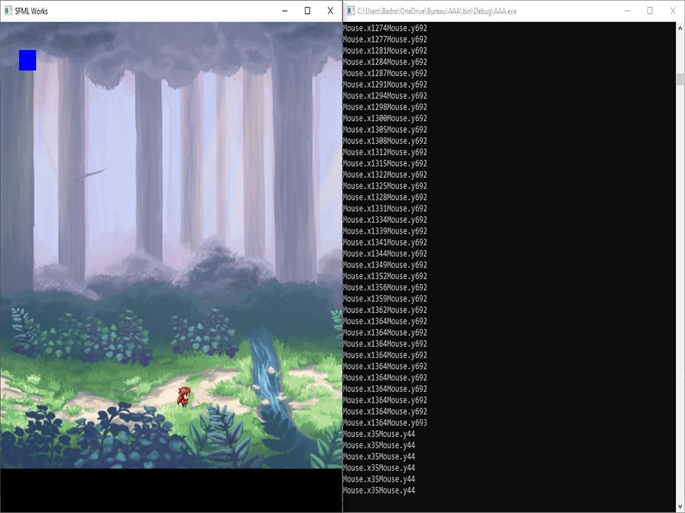

Le premier projet que je vais vous présenter consiste en la création de mon tout premier prototype de jeu en langage C++ en utilisant la librairie SFML et le logiciel Code Blocks. Pour le développer, je devais penser à plusieurs facteurs lors de la réalisation de ce code, comme les déplacements du personnage et de la caméra dans une fenêtre, gérer les frames du personnage quand il se déplace dans une direction en particulier, et intégrer la détection du clavier et de la souris, pour faire avancer le personnage, dans un décor graphique.
